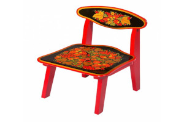
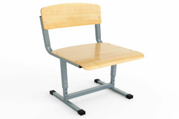
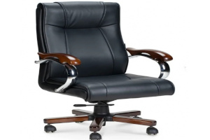
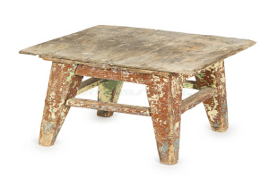

Пенёк Петрович
📍 Детсад «Колосок», 1998–2001
Я на нём первый раз в садике кашу ел, вроде не плакал. Там царапина от машинки осталась, я её туда специально катал.
Здесь собраны стулья, которые изменили наши судьбы (или хотя бы выдержали наш вес). Каждый экспонат имеет имя, возраст и историю. Я на этом стуле первый раз в садике кашу ел, вроде не плакал. А этот помнит, как я диплом писал и уснул на нём. В общем, стулья помнят нас больше, чем мы их.

📍 Детсад «Колосок», 1998–2001
Я на нём первый раз в садике кашу ел, вроде не плакал. Там царапина от машинки осталась, я её туда специально катал.

📍 Школа №5, кабинет алгебры, 2005–2013
Этот стул реально бесил — скрипел на каждой контрольной. А на спинке кто-то написал «Диман». Диман, ты где теперь?

📍 Офис «Рога и Копыта», 2018–2025
Колесо отвалилось через месяц, мы его скотчем примотали — и норм, ещё 2 года проработало. Скотч рулит.

📍 Дача, 1990 — наше время
На нём бабушка чистила картошку, дед читал газету, а мы с друзьями на кухне сидели до утра. Шатается, но не сдаётся.

📍 Бар «У Гоши», 2020–2024
Помнит, как мы после сессии отмечали, и как я там чуть не уснул. Следы от текилы наверное уже не оттереть.